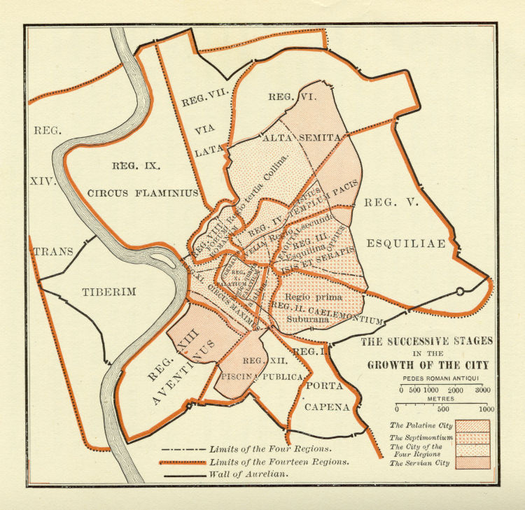

Perioada monarhiei
 Regatul Roman a fost guvernul monarhal al oraşului Roma şi al teritoriilor sale de la Fondarea Romei, fondarea sa în 753 î.Hr. de către Romulus şi Remus, până la expulzarea lui Lucius Tarquinius Superbus în 510 î.Hr. şi formarea Republicii Romane. După legendă, oraşul Roma a fost întemeiat în anul 753 î.Hr. de către Romulus şi Remus, care au fost crescuţi de către o lupoaică. În legenda romană, când grecii au dus Războiul troian împotriva oraşului Troia, prinţul troian Aeneas a navigat peste Marea Mediterană către Italia şi a fondat Lavinium. Fiul său, Iulus, a mers mai departe, fondând oraşul Alba Longa. Din familia regală a Albei Longa au venit cei doi gemeni, Romulus şi Remus, care au purces la fondarea Romei în 753 î.Hr . Legenda intemeierii Romei îi face pe troieni de origine latină, de vreme ce Aeneas a venit din Troia, a fondat Lavinium, un ţinut de limbă latină şi un oraş cu nume latinesc Alba, cuvânt care a şi dispărut la alţii, în afară de români, care sunt mai aproape pe hartă de cetatea în cauză asediată de greci.
Perioada republicii
Republica Romană a fost guvernarea republicană a oraşului Romei şi a teritoriilor sale din 510 î.Hr. până la instaurarea Imperiului Roman, care este plasată, uneori, în anul 44 î.Hr., anul numirii lui Caesar ca dictator perpetuu sau, mai comun, 27 î.Hr., anul în care Senatul roman i-a acordat lui Octavianus titlul de augustus|August Oraşul Roma stă pe malurile fluviului Tibru, foarte aproape de coasta de vest a Italiei. El marca frontiera de nord a zonei în care era vorbită limba latină, şi graniţa de sud a Etruriei, teritoriu în care se vorbea limba etruscă.
Perioada imperiului
Imperiul Roman este termenul utilizat, în mod convenţional, pentru a descrie statul roman în secolele după reorganizarea sa din ultimele trei decade î.Hr.. sub Gaius Iulius Caesar Octavianus. Deşi Roma deţinea un imperiu cu mult înainte de autocraţia lui Augustus, statul pre-augustian este descris, în mod convenţional, ca Republica Romană. Imperiul Roman controla toate statele elenizate de la Marea Mediterană, precum şi regiunile celtice din nordul Europei. Ultimul împărat de la Roma a fost detronat în 476, dar, pe atunci, regiunile din estul imperiului erau administrate de un al doilea împărat, ce se afla la Constantinopol.